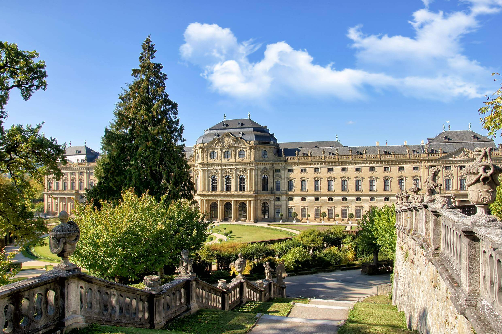

Día 1: De Barcelona a Würzburg
Recorrido:
Barcelona - Frankfurt / Würzburg (119 Km)
Barcelona - Frankfurt / Würzburg (119 Km)
Salida en vuelo a Frankfurt. Llegada y recogida del coche de alquiler en el aeropuerto. Salida hacia Würzburg, centro de la región vinícola de la Franconia, famosa por sus vinos tintos y blancos en sus especiales botellas redondas, recorre el centro histórico de Würzburg, y disfruta de una copa de vino (Brückenschoppen) en la taberna Alte Mainmühle, con hermosas vistas a los viñedos del castillo.
Alojamiento en Würzburg.